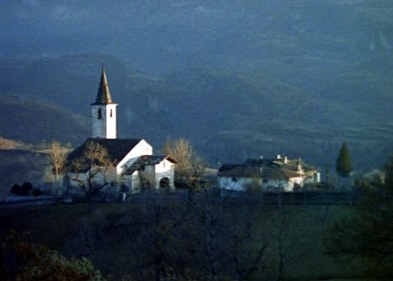
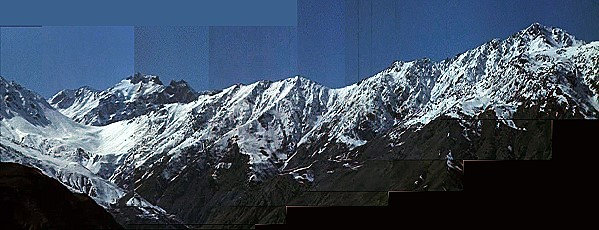
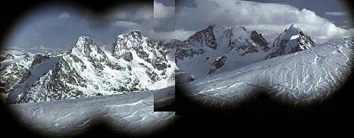
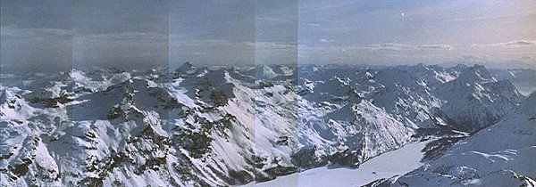
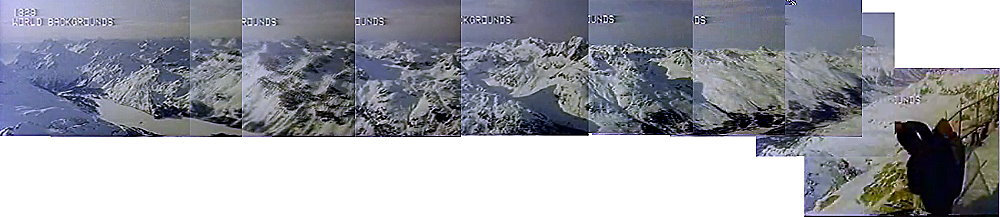
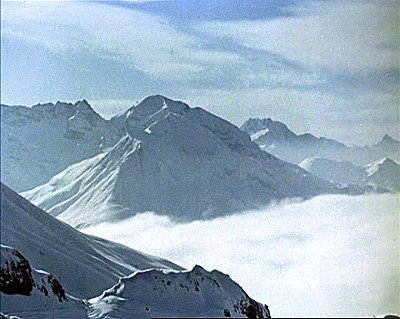
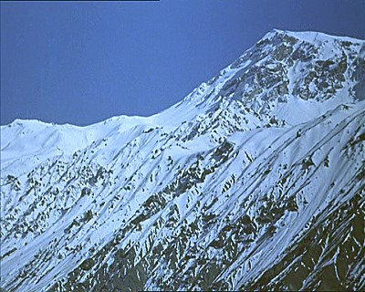
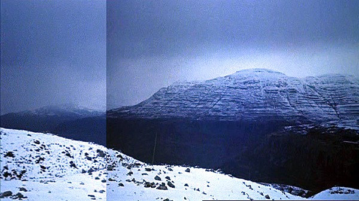
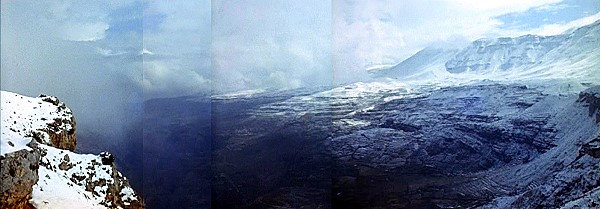
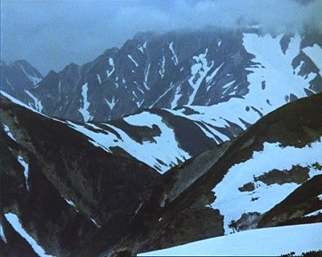

|
|
HELP FIND THE FOLLOWING LOCATIONS
PAGE 57
THE
CHAMPIONS:
Full Circle
(John Gilling:
September/October 1967)
Unknown 1
- Paul Westerman
(Patrick Allen) is intercepted in his Jaguar by
a police car on a country road. The road block is supervised bySergeant
Fairfax (Lawrence James) of
SpecialBranch. They
find the camera but there is no film in it.


THE
CHAMPIONS:
The Final Countdown
(John Gilling:
January 1968)
Giaglione, Piedmont, Italy - The conspirators track down the pilot of Heinkel that
dropped the bomb and pay him a visit (establishing shot of church of San Vincenzo).
(Identified by Sietse Postma, January 2024)

THE
CHAMPIONS:
The
Beginning (Cyril
Frankel: 1967)
Various mountains near the India/China border.
Unknown 1:

Unknown 2:

Unknown 3: World Backgrounds 1829.


Unknown 4:

 World
Backgrounds
clip 1408 “panoramic view of Austrian alps with snow, showing clouds
beneath
camera in places.” Also seen in DEPARTMENT S: Dead
Men Die
Twice
World
Backgrounds
clip 1408 “panoramic view of Austrian alps with snow, showing clouds
beneath
camera in places.” Also seen in DEPARTMENT S: Dead
Men Die
Twice

Unknown 5:

Unknown 6:

Unknown 7:

Unknown 8:

Think you know a spot? Need a bigger image? Email me.
< Previous | Index | Avengerland | Next >
Copyright © 2023 Anthony R. McKay